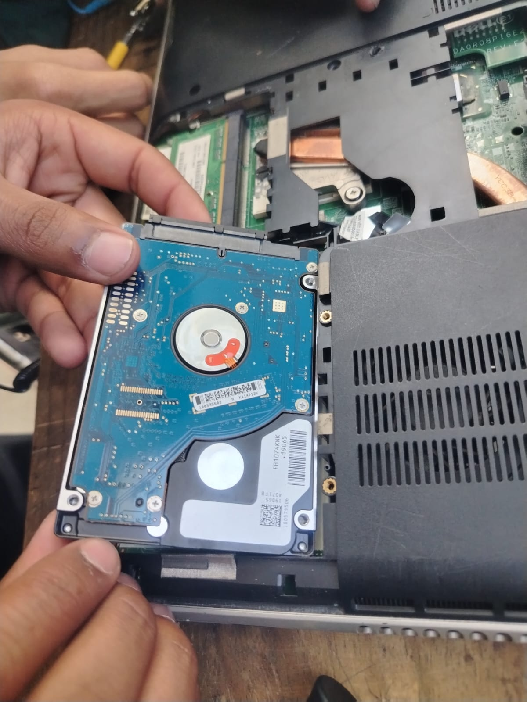
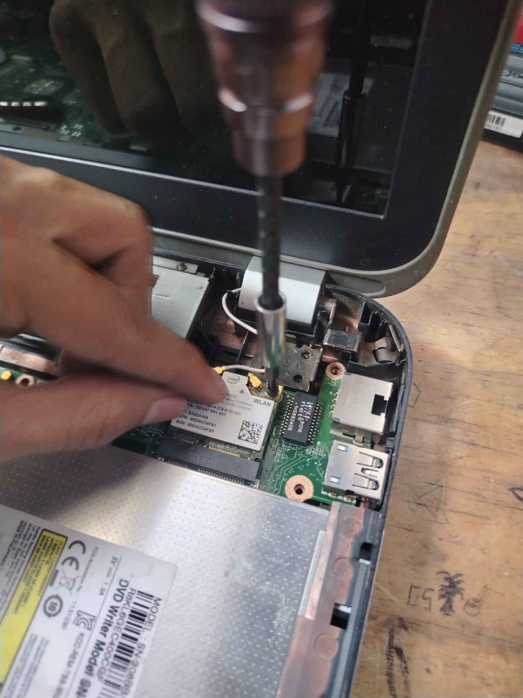

Hola, mi nombre es: Oscar Armando Pablo Capir, actualmente tengo 17 años y curso un perito en informática.
Me considero una persona responsable en mis actividades, una persona interesada en aprender nuevas cosas, como en la tecnología, programación y soporte técnico. También me gusta estar aprendiendo nuevas habilidades constantemente. Suelo ser una persona muy determinada a lograr sus metas y sueños, que, a pesar de los obstáculos de la vida, siempre intento dar lo mejor de mí para poder seguir adelante a pesar de las dificultades.


Me considero una persona un tanto extrovertida, ya que no tengo miedo de experimentar nuevas cosas ni al fracaso. Tengo iniciativa para realizar actividades, sin importar el qué dirán las personas, y expreso lo que pienso y siento con seguridad. Al mismo tiempo, también me considero una persona introvertida, porque prefiero ambientes tranquilos y lugares en los que puedo permanecer relajado, sin estar rodeado de muchas personas.
Me gusta probarme a mí mismo realizando ciertas actividades que me ayuden a mejorar constantemente, a ser una persona sobresaliente, que no se conforma con lo aprendido y que siempre intenta aprender nuevas cosas sobre distintos temas. Soy de esas personas que, si no sabe, aprende e intenta realizar dicha actividad exitosamente.